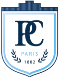
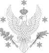

Jacek Herbrych
WUST, Wrocław, Poland

Luca de' Medici
ESPCI, Paris, France
Maria Daghofer
US, Stuttgart, Germany
Jernej Mravlje
JSI, Ljubljana, Slovenia
Ana Akrap
UZ, Zagreb, Croatia
Bartłomiej Gardas
QMZ, Warsaw, Poland
Anna Tamai
UG, Geneva, Switzerland

Krzysztof Wohlfeld
UW, Warsaw, Poland